ՄԱՆևՐՈՒՄ, ԴԱՍԱՎՈՐՎԱԾՈՒԹՅՈՒՆ ԵՐԹևԵԿԵԼԻ ՄԱՍՈՒՄ, ԵՐԹևԵԿՈՒԹՅԱՆ
ԱՌԱՎԵԼՈՒԹՅՈՒՆ
1. Նշաններից ո՞րն է կոչվում «Արգելքի շրջանցումը ձախից»։
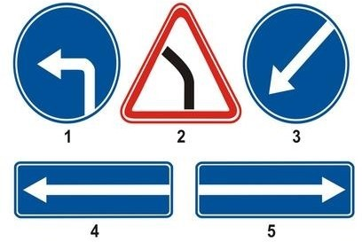
2. Թույլատրվու՞մ է արդյոք ավտոբուսի վարորդին մուտք գործել խաչմերուկ տվյալ իրադրությունում։
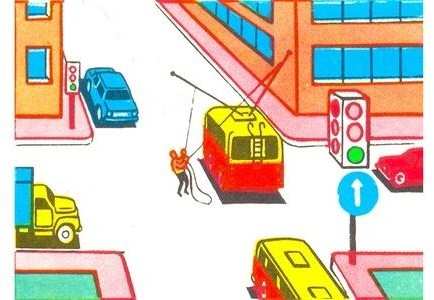
3. Նշված դեպքում ո՞ր գոտուց պետք է կատարվի աջ շրջադարձը։
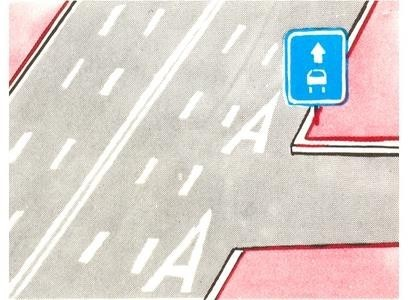
4. Խաչմերուկում կազմակերպված է շրջանաձեւ երթեւեկություն։ Երթեւեկելի մասը, որով մոտենում եք խաչմերուկին, ունի երթեւեկության երկու գոտի։ Խաչմերուկ մուտք գործելիս` շրջադարձ կատարելու համար ո՞ր գոտին եք պարտավոր զբաղեցնել՝
5. Թույլատրվու՞մ է արդյոք մուտք գործել բակ նշված տեղից:
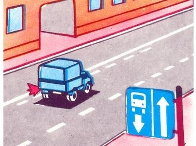
6. Երկկողմ երթեւեկությամբ գծանշված ճանապարհներին, երեք գոտու առկայության դեպքում, որոնցից միջինն օգտագործվում է երկու ուղղություններով երթեւեկության համար, ձախ եզրային գոտի մուտք գործելը՝
7. Ո՞ր պատասխանում է ճիշտ նշված երթեւեկության թույլատրելի ուղղությունը։

8. Ո՞ր ուղղությամբ է արգելվում երթեւեկությունը՝
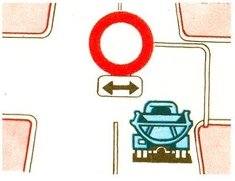
9. Հետադարձն արգելվում է՝
10. Թույլատրվու՞մ է արդյոք դեղին ավտոբուսի վարորդին մուտք գործել խաչմերուկ։
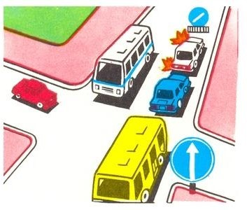
11. Ո՞ր պատասխանում է ճիշտ նշված երթեւեկության թույլատրելի ուղղությունը։
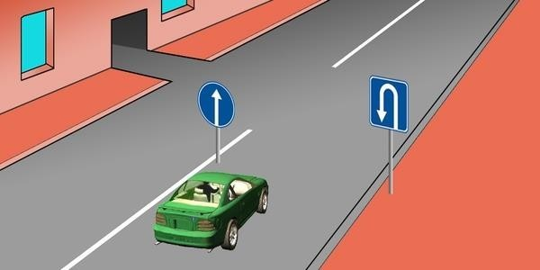
12. Հետադարձն արգելվում է, եթե ճանապարհի թեկուզ եւ մեկ ուղղությամբ տեսանելիությունը պակաս է՝
13. Դուք երթեւեկում եք երեք գոտի ունեցող երկկողմ երթեւեկությամբ ճանապարհով։ Ո՞ր դեպքում է թույլատրվում մուտք գործել միջին գոտի։
14. Ո՞ր ուղղությամբ է թույլատրվում բեռնատար ավտոմոբիլի երթեւեկությունը։
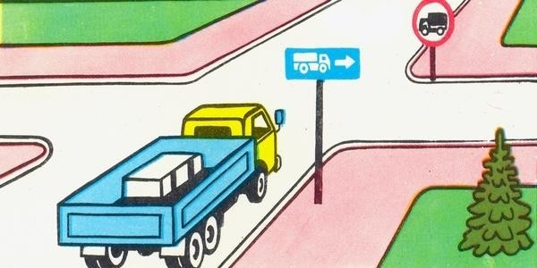
15. Ո՞ր նկարում է վարորդը ճիշտ կատարում մանեւրը։
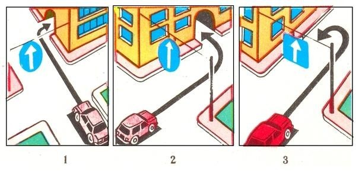
16. Ո՞ր տրանսպորտային միջոցի վարորդն է ճիշտ կատարում հետադարձը։
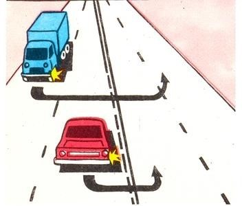
17. Ճանապարհային նշանների, գծանշման եւ բաժանարար գոտու բացակայության դեպքում վարորդները երկկողմ երթեւեկությամբ ճանապարհների երթեւեկելի մասում գտնվող ճանապարհային կառույցների տարրերը պետք է շրջանցեն՝
18. Ո՞ր ուղղությամբ է արգելվում երթեւեկությունը։
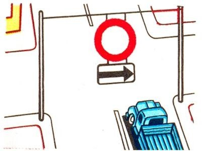
19. Ո՞ր տրանսպորտային միջոցի վարորդն է խախտում կանոնները շրջադարձ կատարելիս՝ արգելակման գոտի ունեցող ճանապարհին։
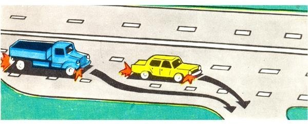
20. Թույլատրվու՞մ է արդյոք տվյալ իրադրությունում կարմիր ավտոմոբիլի վարորդին շարունակել երթեւեկությունը։
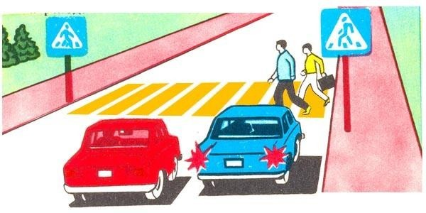
21. Երեք գոտի ունեցող երկկողմ երթեւեկությամբ ճանապարհի վրա Ձեզ անհրաժեշտ է կատարել ձախ շրջադարձ։ Ո՞ր գոտուց կկատարեք տվյալ մանեւրը։
22. Թույլատրվու՞մ է արդյոք կարմիր ավտոմոբիլի վարորդին երթեւեկել տրամվայի գծերով։
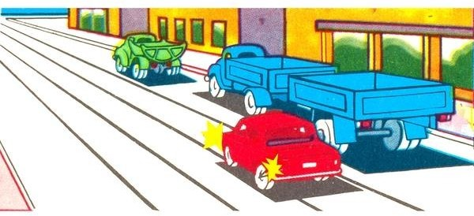
23. Հետադարձն արգելվում է՝
24. Ո՞ր ուղղություններով է թույլատրվում երթեւեկությունը։
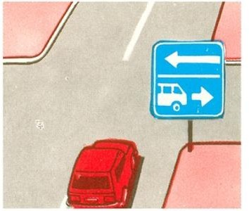
25. Ո՞ր տրանսպորտային միջոցների վարորդներն են խախտել ճանապարհային նշանի պահանջները։
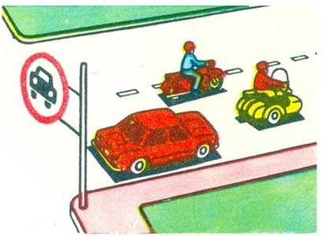
26. Համընթաց ուղղությամբ երթեւեկող տրանսպորտային միջոցների միաժամանակյա վերադասավորման դեպքում ճանապարհը պետք է զիջի՝
27. Ո՞ր տրանսպորտային միջոցի վարորդն ունի առաջնահերթ երթեւեկության իրավունք։
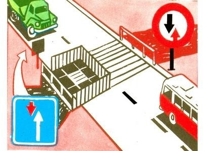
28. Պարտավո՞ր է արդյոք սահմանված երթուղով երթեւեկող ավտոբուսի վարորդը նշված իրադրությունում զիջել ճանապարհը։
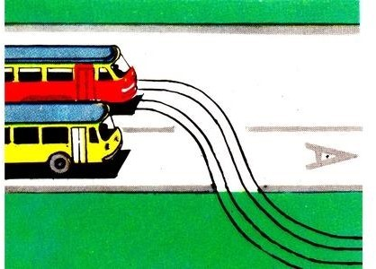
29. Եթե համապատասխան նշաններով կահավորված երկայնական թեքությամբ ճանապարհահատվածներում հանդիպակաց երթեւեկությունը դժվարացած է, ապա ճանապարհը պետք է զիջել՝
30. Ո՞ր տրանսպորտային միջոցի վարորդը պետք է զիջի ճանապարհը։
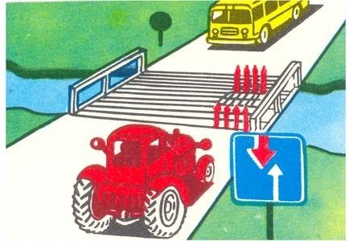
31 Երթեւեկության առավելություն ունի՝
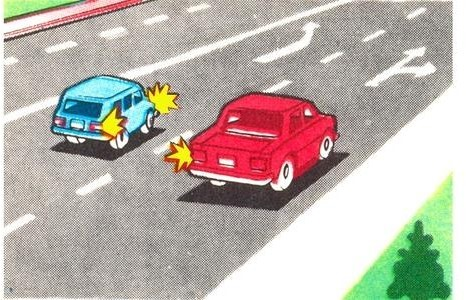
32. Պարտավո՞ր են արդյոք տրանսպորտային միջոցների վարորդները բնակավայրերում ճանապարհը զիջել կահավորված եւ նշված կանգառի կետերի տարածքից երթեւեկությունը սկսող ընդհանուր օգտագործման տրանսպորտային միջոցներին։
33. Ո՞ր տրանսպորտային միջոցի վարորդը պետք է զիջի ճանապարհը։
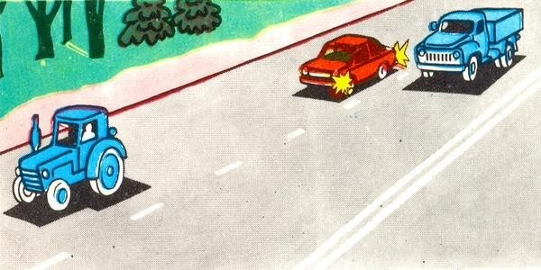
34. Ո՞ր տրանսպորտային միջոցի վարորդը պետք է զիջի ճանապարհը։
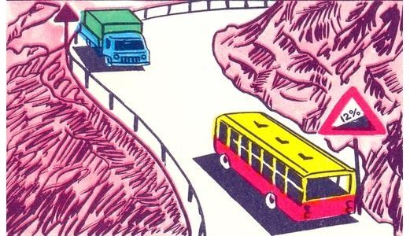
35. Ո՞ր տրանսպորտային միջոցի վարորդը պետք է զիջի ճանապարհը։
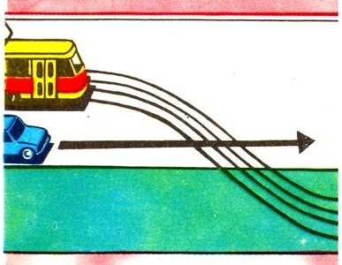
36. Նշե՛ք խաչմերուկի անցման հերթականությունը
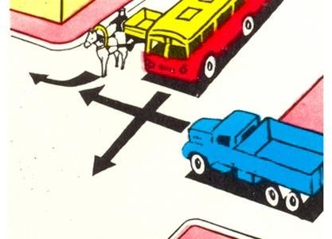
37. Հանդիպակաց երթեւեկության դեպքում կտրուկ վայրէջքի վրա անհրաժեշտ է ճանապարհը զիջել՝
38. Բնակավայրերում միեւնույն ուղղությամբ երթեւեկության 3 եւ ավելի գոտիների առկայության դեպքում ձախ եզրային գոտի զբաղեցնել թույլատրվու՞մ է արդյոք ընդհանուր օգտագործման տրանսպորտային միջոցներին։
39. Բոլոր ճանապարհներին միեւնույն ուղղությամբ երթեւեկության 3 եւ ավելի գոտիների առկայության դեպքում ձախ եզրային գոտի զբաղեցնել թույլատրվու՞մ է արդյոք ընդհանուր օգտագործման տրանսպորտային միջոցներին։
40. Ինչպե՞ս պետք է վարվի երթուղային ավտոբուսի վարորդը տվյալ իրավիճակում։
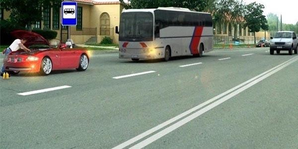
41. Տվյալ իրադրությունում սպիտակ թեթեւ մարդատար ավտոմոբիլի վարորդը՝
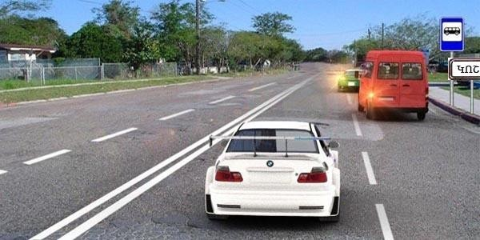
42. Ո՞ր տրանսպորտային միջոցի վարորդն ունի առաջնահերթ երթեւեկության իրավունք։
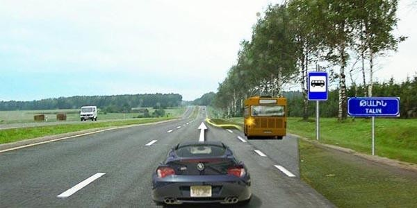
43. Ո՞ր տրանսպորտային միջոցի վարորդն ունի առաջնահերթ երթեւեկության իրավունք տվյալ իրավիճակում։
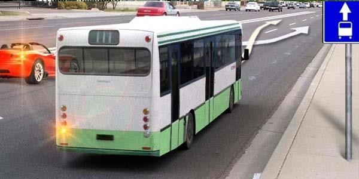
44. Խաչմերուկում որտեղ կազմակերպված է շրջանաձեւ երթեւեկություն, պարտավո՞ր է արդյոք ավտոբուսի վարորդը զիջել ճանապարհը բեռնատար ավտոմոբիլին։
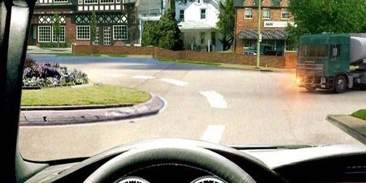
45. Երթեւեկությունն ուղիղ շարունակող ավտոբուսի վարորդը պարտավո՞ր է արդյոք զիջել ճանապարհը։
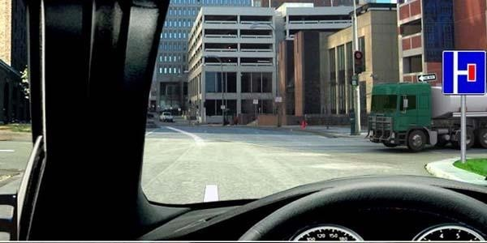
46. Եթե մտադիր եք շարունակել երթեւեկությունն ուղիղ, ո՞ր տրանսպորտային միջոցին պետք է զիջեք ճանապարհը։
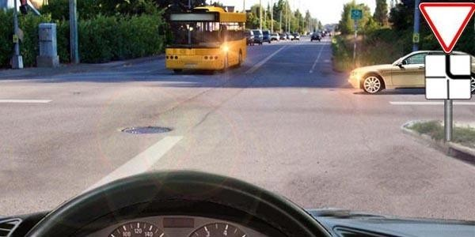
47. Եթե մտադիր եք շարունակել երթեւեկությունն ուղիղ, ու՞մ պետք է զիջեք ճանապարհը։
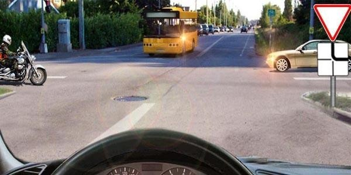
48. Տվյալ իրադրությունում պարտավո՞ր է մոտոցիկլի վարորդը զիջել ճանապարհը։
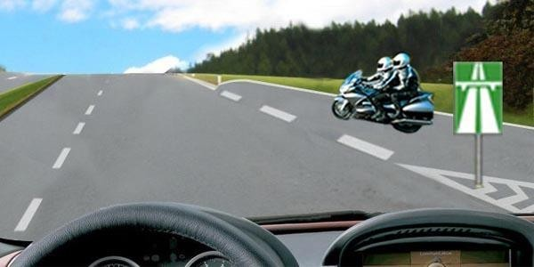
49. Տվյալ իրադրությունում ունե՞ք արդյոք նշված մանեւրի իրավունք։
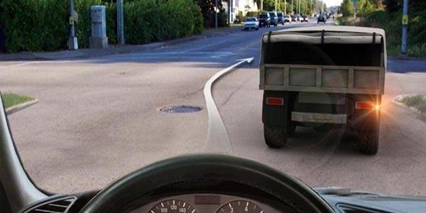
50. Դուք շարունակում եք երթեւեկությունն ուղիղ, ո՞ր տրանսպորտային միջոցին պետք է զիջեք ճանապարհը։
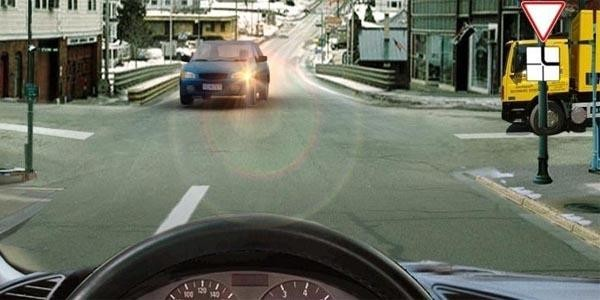
51. Դուք շարունակում եք երթեւեկությունն ուղիղ, պարտավո՞ր եք արդյոք զիջել ճանապարհը թեթեւ մարդատար ավտոմոբիլին։
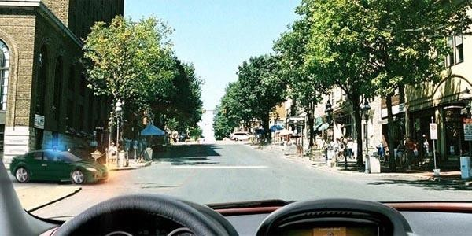
52. Դուք սկսում եք երթեւեկել ճամփեզրից, պարտավո՞ր եք արդյոք զիջել ճանապարհը թեթեւ մարդատար ավտոմոբիլին, որը կատարում է հետադարձ։

53. Դուք շարունակում եք երթեւեկությունն ուղիղ, ո՞ր տրանսպորտային միջոցին պետք է զիջեք ճանապարհը։
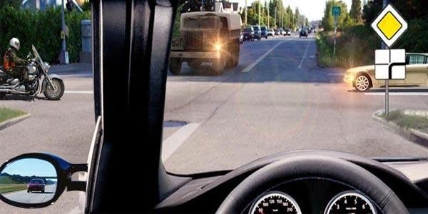
54. Եթե մտադիր եք կատարել ձախ շրջադարձ, ո՞ր տրանսպորտային միջոցին պետք է զիջեք ճանապարհը։
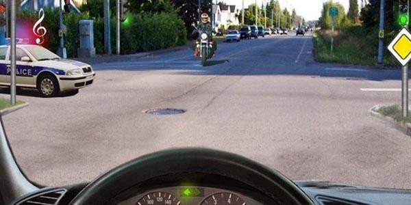
55. Եթե մտադիր եք խաչմերուկում կատարել հետադարձ, ո՞ր տրանսպորտային միջոցին պետք է զիջեք ճանապարհը։
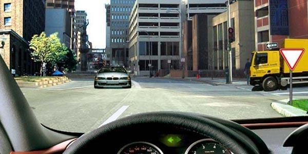
56. Եթե մտադիր եք խաչմերուկում կատարել ձախ շրջադարձ, ո՞ր տրանսպորտային միջոցին պետք է զիջեք ճանապարհը։
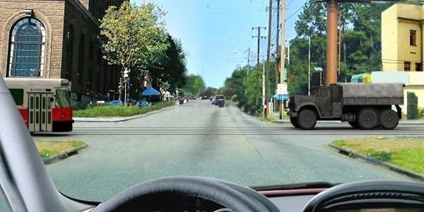
57. Եթե մտադիր եք խաչմերուկում կատարել ձախ շրջադարձ, ո՞ր տրանսպորտային միջոցին պետք է զիջեք ճանապարհը։
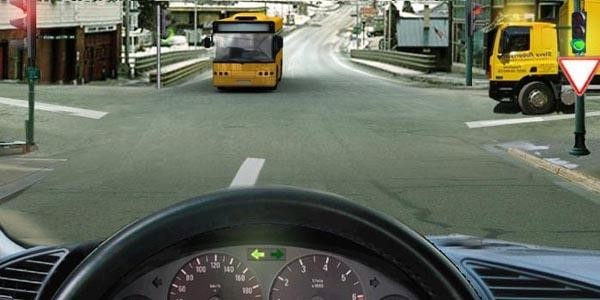
58. Եթե մտադիր եք խաչմերուկում կատարել հետադարձ, ո՞ր տրանսպորտային միջոցին պետք է զիջեք ճանապարհը։
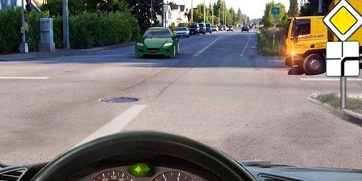
59. Եթե մտադիր եք կատարել ձախ շրջադարձ, ո՞ր տրանսպորտային միջոցին պետք է զիջեք ճանապարհը։
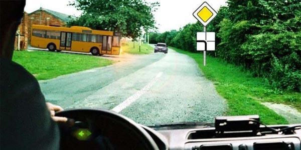
60. Եթե մտադիր եք կատարել աջ շրջադարձ, պարտավո՞ր եք արդյոք զիջել ճանապարհը թեթեւ մարդատար ավտոմոբիլին։
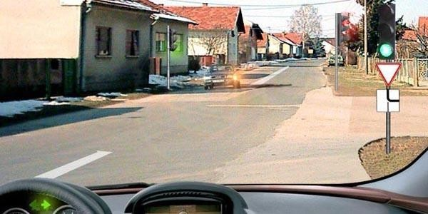
61. Եթե մտադիր եք կատարել աջ շրջադարձ, ո՞ր տրանսպորտային միջոցին պետք է զիջեք ճանապարհը։
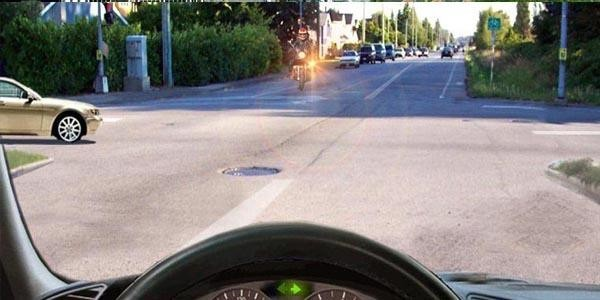
62. Պարտավոր ենք արդյո՞ք այս իրավիճակում զիջել հանդիպակացից մոտեցող ավտոմոբիլի վարորդին:
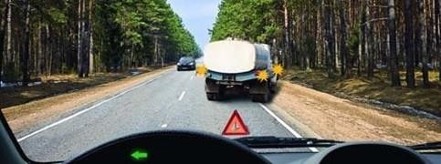
63. Այս իրավիճակում պարտավոր եք
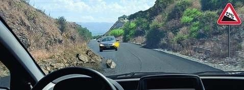
64. Տվյալ իրավիճակում
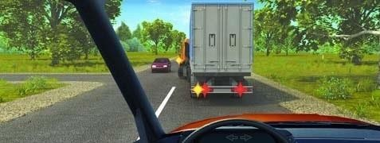
65. Այս իրավիճակում
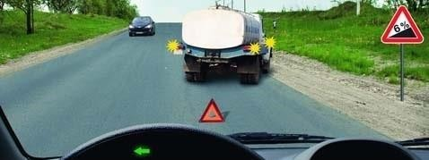
66. Տվյալ իրավիճակում ուղիղ երթևեկելու դեպքում թույլատրվում է
67. Ո՞ր հետագծով է թույլատրվում մոտենալ մայթեզրում սպասող հետիոտնին
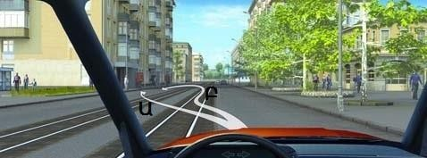